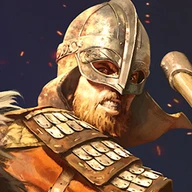

Mount & Blade II: Bannerlord
Tools and Libraries for
Bannerlord Modding.
We build the mod loader, the shared libraries that mods depend on, a handful of mods of our own, and community services for crash reporting, translations and mod lists.
Everything here is open source and free. We are not affiliated with TaleWorlds.
- Repositories
- 61
- Game Versions Supported
- e1.1.0 onward
- Community Services
- 8
- License
- Open Source
Game Version Support
We track Bannerlord's stable and beta releases and generate reference assemblies for mod authors.
Current Game Versions
- Stable
- v1.4.8
- Beta
- v1.5.3
Last Checked: 2026-09-15 UTC
Reference Assemblies
Compile against a specific Bannerlord version without installing that game build. We generate reference assemblies starting from e1.1.0.
Check the published packages for available versions.
Start Here
Almost every Bannerlord mod, ours and other people's, expects these to be installed. Install them first, in this order.
Bannerlord Software Extender. You launch the game through it. It adds an extended launcher with load-order sorting and compatibility checks, and catches the exceptions that become crash reports.
HarmonyPatchingThe patching library nearly every mod uses to change how the game behaves. Installing it once keeps mods from shipping their own clashing copies.
ButterLibAPICommon functions and an API other mods build on, plus the component that generates a crash report when something goes wrong.
UIExtenderExUILets several mods change the same game screen without fighting each other over it.
MCMSettingsMod Configuration Menu. If a mod has an in-game settings screen, it almost certainly uses MCM to draw it. Needs the three above.
BLSE extends SubModule.xml with DependedModuleMetadatas: load before or after, version ranges, optional, incompatible. The launcher sorts your load order from it.
Mods
Our own additions to the game. Releases are on GitHub and Nexus Mods.
Take control of almost any hero from any clan in the world, and keep playing as them.
Yell to InspireYell on the battlefield to rally the troops around you.
Discord Rich PresenceShows what you're doing in Calradia on your Discord profile.
Community PatchArchivedCommunity bug fixes that landed ahead of official patches. Retired once TaleWorlds absorbed the fixes upstream.
Experiments
Projects exploring AI gameplay and mod scripting in other languages.
Services
Community infrastructure we run and pay for. Live availability is on the status page.
Visualises a crash report generated by ButterLib, so you can see what failed instead of reading the raw report.
Crash Report DashboardLink your mods, see every crash report that involves them, and triage them. Sign in with Nexus Mods or Steam.
Translations translate.butr.linkTranslate Bannerlord mods into your language in the browser. No files to edit, nothing to install. BUTR mods are already there, and any mod author can add their own.
Mod List modlist.butr.linkStores your mod list so it can be pulled back by a link, or by apps like Discord bots.
Download Badges nmstats.butr.linkshields.io endpoints for Nexus Mods download and endorsement counts. Drop a live badge straight into your mod's README.
Service Status status.butr.linkLive uptime for everything above. Check here first if something looks broken.
Make a Mod
Start from the template: it produces a mod that builds and loads in one command. Use the libraries below as your mod needs them.
Documentation
Generated from source on every release.
Browsable API surface of the game itself, generated from the reference assemblies.
ButterLib butterlib.butr.linkAPI reference and usage guides for the shared library.
UIExtenderEx uiextenderex.butr.linkPrefab and ViewModel extension patterns, with worked examples.
MCM mcm.bannerlord.aragas.orgDefining settings for your mod: global, per-campaign or per-save, across five control types.
Publish Your Mod
Tools for uploading releases and preparing your mod descriptions.